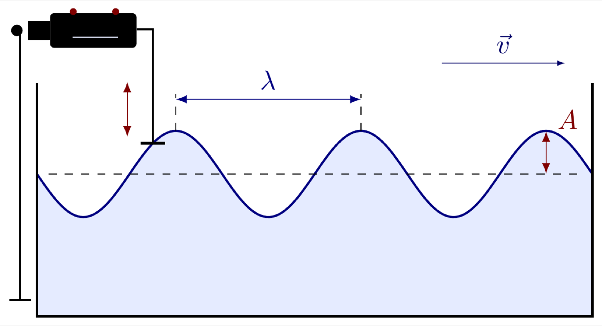
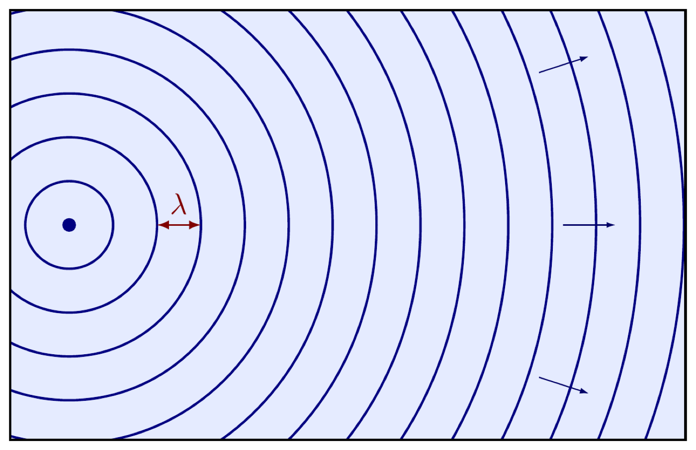
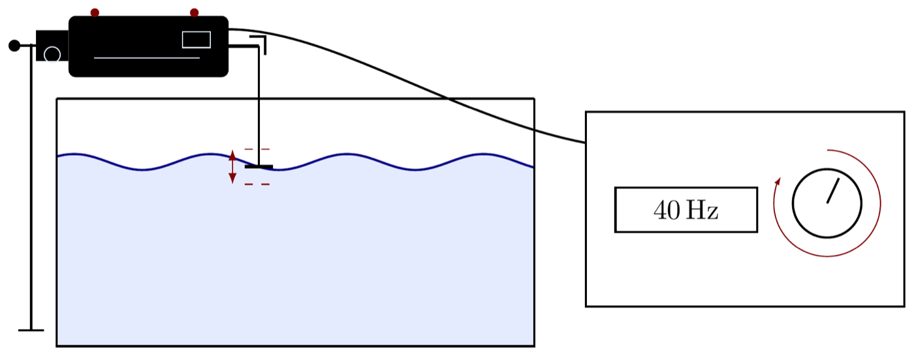
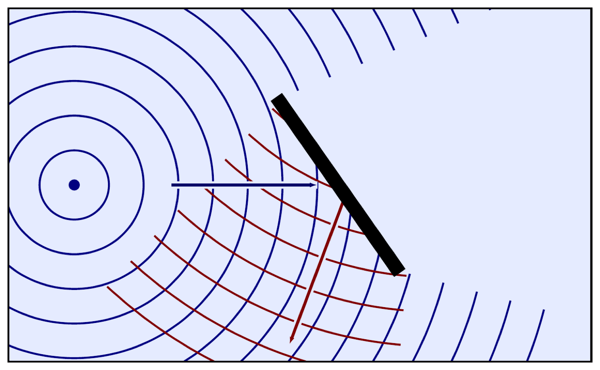

Setup
I set the ripple tank up at the front of the room the same way every year: a shallow tray of water, a lamp overhead so the wave pattern shows up as light and dark bands, and a motorised source that dips into the water at a fixed, adjustable rate. I don't open with wave vocabulary. I turn it on and let the class watch first, then start asking what they're actually seeing.
Wavelength and Amplitude
A snapshot of the water's surface at one instant looks like any other transverse wave: crests, troughs, and a flat equilibrium level in between. The wavelength, \(\lambda\), is the distance between two consecutive points doing the same thing in the cycle, crest to crest, or trough to trough. The amplitude, \(A\), is the maximum displacement from that equilibrium level, crest height above it or trough depth below it, not the full crest-to-trough distance.

The source itself is what's generating this: a motor drives it up and down in simple harmonic motion, and each downstroke pushes out one new wavefront. The wave travels outward, at velocity \(\vec{v}\), carrying the pattern the source is producing, but not carrying the water itself anywhere. A cork floating on the surface would bob up and down in place, not travel with the wave.
Wavefronts From a Point Source
Viewed from above instead of from the side, each dip of a point source sends out a circular ripple. Successive dips send out successive circles, one wavefront per cycle, each one a ring of points that are all doing the same thing at the same time, all at a crest, say. The spacing between one wavefront and the next, measured along the direction of travel, is still \(\lambda\), the same quantity as the side view, just read off a different picture.

Far enough from the source, a small stretch of one of these circles is almost indistinguishable from a straight line. That's the plane-wavefront picture used everywhere else in this unit, ripple tank included: it's not a different kind of wave, just a circular wavefront looked at from close enough that its curvature stops being visible.
The Source Sets the Frequency
This is the fact I need the class to leave with. The motor's dial controls how many times per second the source dips into the water, 40 Hz drives out 40 wavefronts every second. In a ripple tank, frequency isn't something you read off the water. It's a setting on the source. Everything else in the wave, wavelength included, is downstream of that choice.

Before I touch the dial, I have the class predict what happens to the spacing between wavefronts if I turn the frequency up. Then I turn it up, and they watch the wavefronts bunch closer together. Turn it down, and the wavefronts spread back out. Wavelength changes, visibly, every time frequency does.
The reasoning behind that result matters more than the measurement itself, because it's the sentence that has to survive intact to the refraction lesson later in this unit: frequency is a property of the source, speed is a property of the medium, and wavelength is whatever value keeps \(v = f\lambda\) true for that particular source in that particular medium. When the same wave later crosses into a different medium, the source still fixes \(f\), but the new medium fixes a new \(v\), which forces \(\lambda\) to change again, for a completely different reason than turning a dial.
Reflection and the Huygens–Fresnel Principle
Put a straight barrier in the tank at an angle to the incoming wavefronts and the reflected pattern that comes back off it isn't arbitrary, it follows a rule the tank lets you watch happen instead of just stating. The rule underneath it is the Huygens–Fresnel principle: every point on a wavefront can be treated as a source of its own secondary circular wavelets, and the wavefront a moment later is the surface tangent to all of those wavelets at once. It's a recipe for building the next wavefront out of the current one, point by point, without needing to know anything about what originally generated the wave.

Apply that point by point construction to a wavefront meeting the barrier. The part of the wavefront closest to the barrier arrives first and starts sending its secondary wavelets back out into the tank while the rest of the wavefront is still on its way in. Because every one of those secondary wavelets travels at the same speed, the same medium, the envelope they build up is itself a straight wavefront, leaving the barrier at the same angle it arrived at, measured from the barrier's normal. That's the law of reflection, angle of incidence equals angle of reflection, arrived at by construction rather than handed down as a rule to memorize.
The Takeaway
Both of the big results in this lesson were built the same way: watch a live system, change one thing about it, and let the class's own observation supply the conclusion. Turn the frequency dial and watch what happens to the wavelength, that's how "speed depends on the medium, not the source" stops being a sentence to memorize and becomes something the class measured themselves. Tilt a barrier and watch the reflected wavefronts come back at a matching angle, that's how the law of reflection stops being a rule and becomes the visible result of every point on a wavefront acting as its own source, exactly as Huygens' principle says it should.
Neither conclusion was announced before the tank was turned on. The class predicted what the dial would do to the wavelength, then checked it. Huygens' principle predicts what a tilted barrier should do to a wavefront, and the tank confirms it in front of everyone, together, the same way the two cart experiments confirmed a model against real motion in the previous lesson. That's the shape of this course: a model gets proposed, then tested against a real system, in the room, before anyone is asked to trust it.